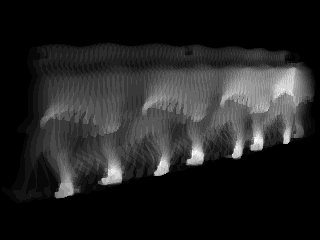
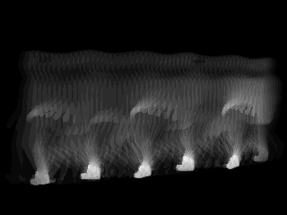
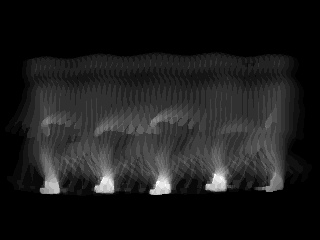
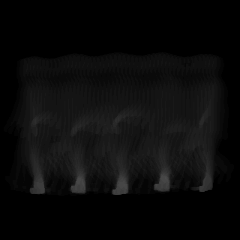
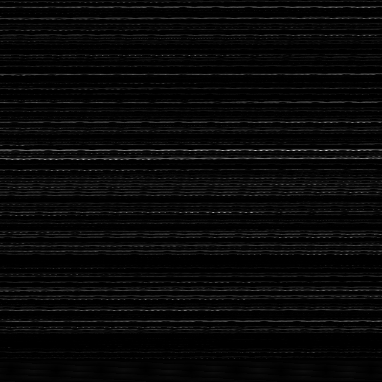

Silhouette sequences
Normal walking sequences from CASIA-B, spanning 124 identities and 11 camera angles.
We investigated how the way we compress a walking sequence into an image changes a neural network’s ability to recognise a person.



A gait cycle may contain dozens of silhouette frames. A feature representation compresses that sequence into a form a classifier can learn - but every compression preserves some signals and discards others.
This project asked which representations carry the most useful identity information, and whether combining static shape with dynamic movement could improve recognition.
Representations that preserve both appearance and temporal change will outperform methods that isolate either signal.
The project began as a structured literature review. Search results were progressively narrowed, relevant methods were logged in an extraction sheet, and evidence about strengths and weaknesses shaped what we eventually implemented.
Search strings around gait, silhouettes, feature representation, and biometric recognition produced a wide pool across the databases recorded in the extraction sheet.
Source names and stage counts follow the workbook’s “Search Parameters” sheet. The written report names Scopus instead of Springer Link; the original records do not resolve that discrepancy.
72 was the core review set recorded by the original search funnel - not the total number of papers collected during the whole project.
For every candidate paper, the working sheet tracked its reference, title, objective, representation, publication year, and journal. Separate sheets counted reported strengths, weaknesses, and how often techniques appeared.
85 entries · Every titled row from the project workbook is included. One title appears twice with different recorded representations. Paper titles are shown without inline academic references for light exploration; full details remain in the extraction sheet and report.
GEI was dominant and efficient, but repeatedly associated with information loss. GEnI captured variability; GFI captured motion but at higher computational cost. That tension led us first to compare representations under matched classifiers - and then to combine complementary cues through DEWGI and the GaitSTAR adaptation.
Continue to the experiments ↓Normal walking sequences from CASIA-B, spanning 124 identities and 11 camera angles.
Each cycle was encoded as GEI, GEnI, GFI, MSI, or the proposed DEWGI representation.
Matched datasets were trained and evaluated with DenseNet and ResNet architectures.
Final test accuracy and cross-entropy loss exposed the effect of representation choice.
Protocol scope: this project used CASIA-B normal walking conditions only. Reported metrics should be read within that experimental setup.
Select a method to see how the same subject and view become a different machine-readable signal.

Averages every silhouette in the gait cycle. Stable body regions remain bright; moving limbs become softer traces.
Testing every representation with two different CNN families helped us ask whether performance came from the input representation or depended on one particular architecture.
DenseNet connects each layer to later layers, encouraging feature reuse and stronger gradient flow. In our matched experiments it achieved the higher accuracy and lower cross-entropy loss for all five representations.
BEST PAIR · DEWGI 92.34% · LOSS 0.27ResNet uses residual connections so deeper blocks learn adjustments to an identity path. It provided a second architectural test of each representation and also ranked DEWGI first.
BEST PAIR · DEWGI 88.17% · LOSS 0.51Viewpoint variation is one of gait recognition’s defining challenges. Drag the control to inspect the project’s DEWGI output across all eleven CASIA-B camera positions.
GaitSTAR combines spatial appearance with temporal motion and uses attention to emphasise discriminative evidence. We carried that premise into a project-specific feature pipeline and a deeper recognition network.
Instead of treating the method as a black-box baseline, we reworked preprocessing, feature fusion, classifier depth, supervision, augmentation, and optimisation.

CNN appearance features + dense optical flow + temporal weightingCLAHE and bilateral filtering prepare each frame. A small CNN extracts appearance cues while Farneback optical flow captures magnitude and direction. Temporal weights pool both streams into one feature image.
124-way classification under the project’s normal-condition split. An earlier classifier iteration recorded 94.911%; because architecture, optimisation, augmentation, and epoch count changed together, that comparison is a development milestone - not a component-by-component ablation.
Context reproduced from the final report. This was not a controlled ablation or independent reimplementation of every baseline; comparisons may inherit protocol differences.
The 98.712% value is a saved notebook result, not a peer-reviewed claim. Some analysis cells later in the notebook use simulated confidence values for visualisation; those plots are not presented here as experimental evidence. The showcase separates recorded classification accuracy from illustrative analysis.
This record comes from executable cells, saved outputs, and notebook metadata - not retrospective estimates. Open each panel for the exact experimental choices and known limitations.
GEI, GEnI, GFI, and DEWGI contain 8,155 derived images; MSI and Enhanced GaitSTAR record 8,154. Images were grayscale at 240×240 with 124 identity labels.
random_state=42 for splittingAll five representations used the same DenseNet training function for the matched comparison.
The ResNet experiments used a residual image classifier with checkpoints and scheduled learning rates.
The final PyTorch model used the enhanced residual-attention architecture documented above.
The notebooks record Python 3.10.14, Kaggle GPU runtimes, CUDA execution, and Tesla T4 acceleration for most DenseNet/ResNet runs. Kaggle image IDs range from 30775 to 30787.
“The input is not just preparation for the model. It is part of the model’s argument about the world.”
The same classifier shifted materially when the sequence encoding changed.
DEWGI’s mix of static and dynamic cues was the most reliable of the five representations tested.
Strong normal-condition results do not automatically imply robustness to clothing, bags, or unseen settings.
Clear authorship matters. The project combined complementary strengths in implementation, analysis, and academic reading.
Supervised the final-year project at the Department of Computer Science, University of Ghana.
An unpublished final-year undergraduate research project carried out at the Department of Computer Science, University of Ghana. The project documentation was submitted in September 2024 and the work continued into January 2025.